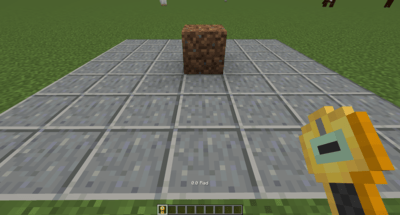
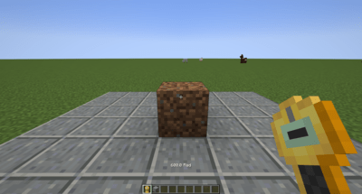
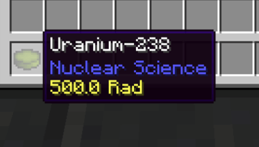
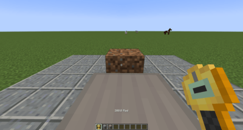
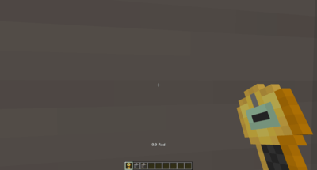
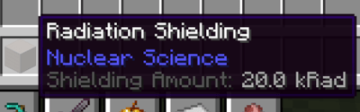

Radiation
Core Mechanic
Radiation is lethal if you are exposed for too long. Read this page entirely before handling radioactive materials.
How Radiation Works
Radiation is measured in Rads and functions using ray casting. Each source emits rays within a defined radius. If you are outside this radius, you are not affected.
Height Matters!
The system takes the entity's size into account. A 2-block tall player exposed to a 300 Rad source actually absorbs a total of 600 Rads.


Radioactive Sources
Hover over an item in your inventory while holding Ctrl to see its radioactivity level.

The main radioactive materials are:


Detecting Radiation
The Geiger Counter is an essential tool for measuring exposure in real-time. Keep it in your inventory — it emits a clicking sound as soon as it detects radiation.
 Geiger Counter — 100 J/tick
Geiger Counter — 100 J/tick
Protection
Option 1 — Iodine Tablets
Iodine Tablets offer temporary protection. They absorb up to 1,000 Rads for 5 minutes per tablet, and still reduce damage even beyond their threshold.
Option 2 — Hazmat Suit
The Full Hazmat Suit is much more robust. It absorbs radiation at the cost of its durability. A reinforced version is available. It can be repaired using a Lead Canister in an anvil.


Option 3 — Block Shielding
Certain blocks provide shielding against radiation. Hold Shift while hovering over a block to see its protection value.
Two Blocks Required
Since the player is 2 blocks tall, you need 2 stacked shielding blocks for complete protection.



Curing Radiation
If you have been exposed, consume an Antidote to immediately remove the radiation effect. Antidotes are obtained by processing fish.

Detection and Cleaning Machines
Cloud Chamber
Powered by liquid Methanol, the Cloud Chamber reveals all radiation sources within a 16-block radius as glowing outlines. It can be activated by a redstone signal.
Fallout Scrubber
The Fallout Scrubber accelerates the dissipation of degressive radiation sources within a 16-block radius. It requires water and decontamination foam. The effects of multiple scrubbers stack.
| Source Type | Behavior |
|---|---|
| Permanent | Never disappears |
| Temporary | Disappears over time |
| Degressive | Reduced by the environment — affected by the scrubber |